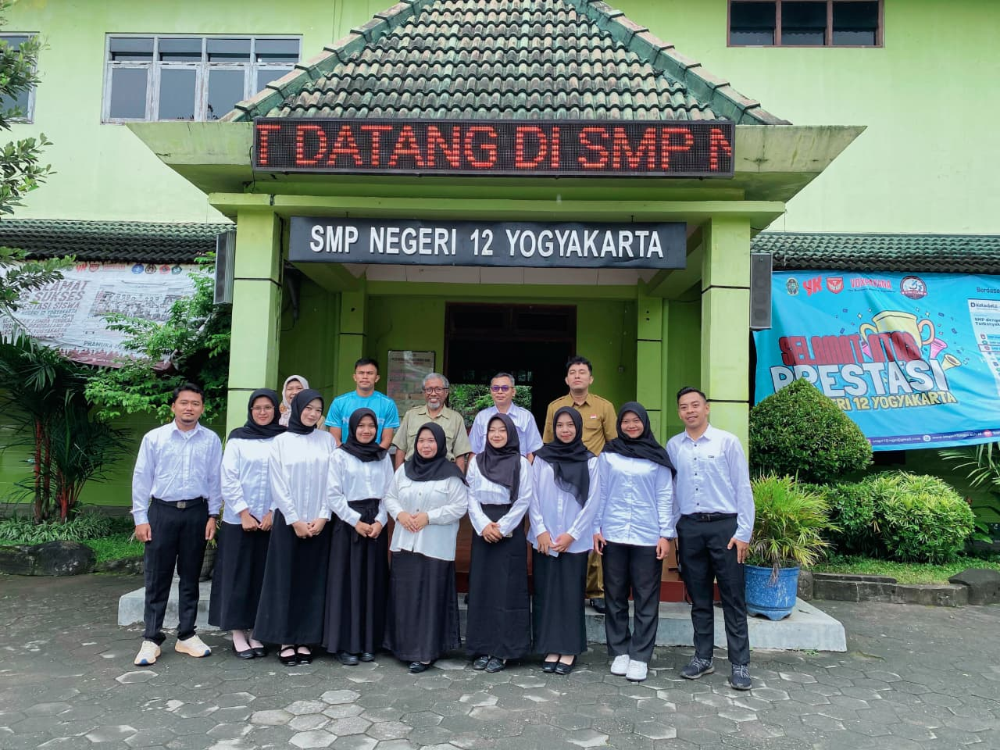
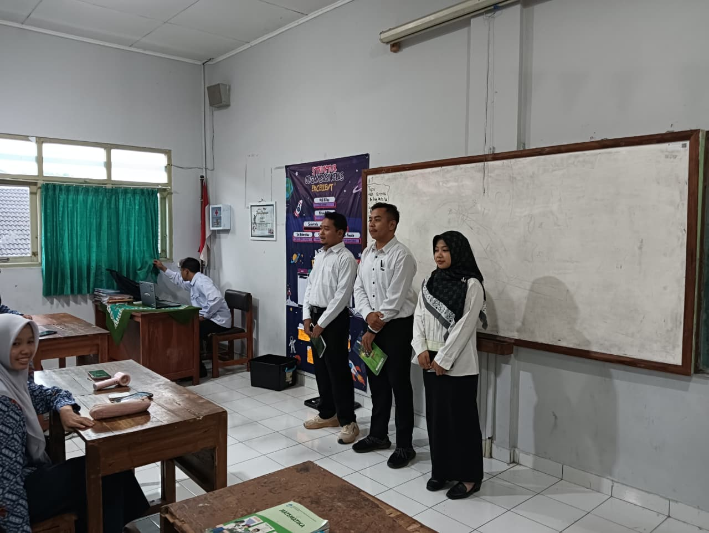

Rekam Jejak Lapangan
Dokumentasi Kegiatan
Kumpulan momen inspiratif, aksi nyata, dan dinamika pembelajaran selama mengikuti program PPG Prajabatan dan Praktik Pengalaman Lapangan (PPL).




Kumpulan momen inspiratif, aksi nyata, dan dinamika pembelajaran selama mengikuti program PPG Prajabatan dan Praktik Pengalaman Lapangan (PPL).

